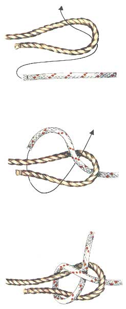

Schootsteek
Gebruik
De schootsteek, die ook weversknoop wordt genoemd wanneer hij van dun touw wordt gemaakt, is een veelgebruikte steek voor het aan elkaar vastmaken van twee lijnen van ongelijke dikte, maar van hetzelfde materiaal. De steek kan ook gebruikt worden om een lijn aan een oogje of een lus te bevestigen. De schootsteek heeft echter ook een aantal bezwaren. Hij beknijpt onder zware belasting en heeft de neiging te slippen in glad materiaal. Bij veiligheidstests blijkt dat de schootsteek in gemiddeld 22 op de 100 gevallen bezwijkt. Het is ook geen erg sterke knoop met zijn breeksterkte van 55%.
Methode
Met een van de touwen wordt een oog gemaakt. De tamp (=werkend uiteinde) van de andere tros wordt door het oog gestoken, er omheen geslagen en vervolgens onder het vaste part doorgestoken zodat hij vast komt te zitten.
De schootsteek kan ook gemaakt worden door de tamp tweemaal in plaats van eenmaal rond het oog te slaan, waarna hij dan weer kan worden vastgezet. In dat geval spreekt men van een dubbele schootsteek. Zo kan de veiligheid van de knoop verhoogd worden, wat vooral van pas komt wanneer het dikteverschil tussen beide touwen te groot is.
